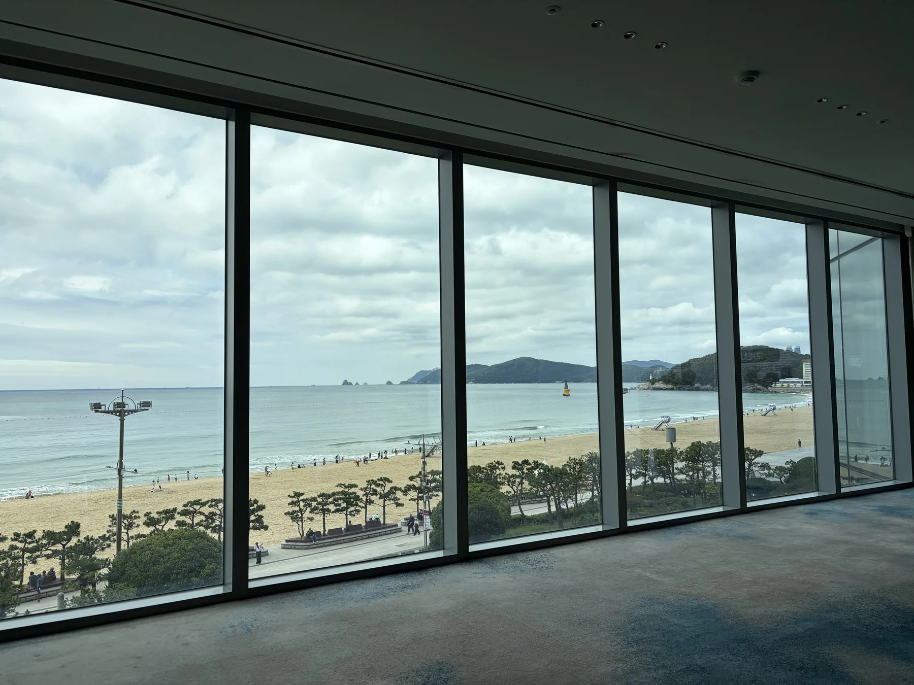
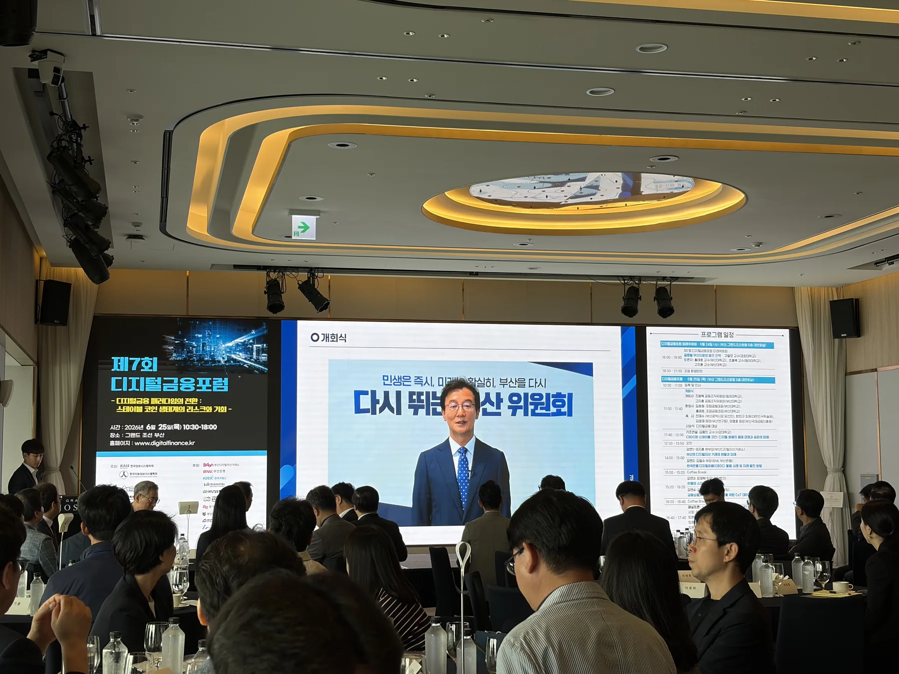
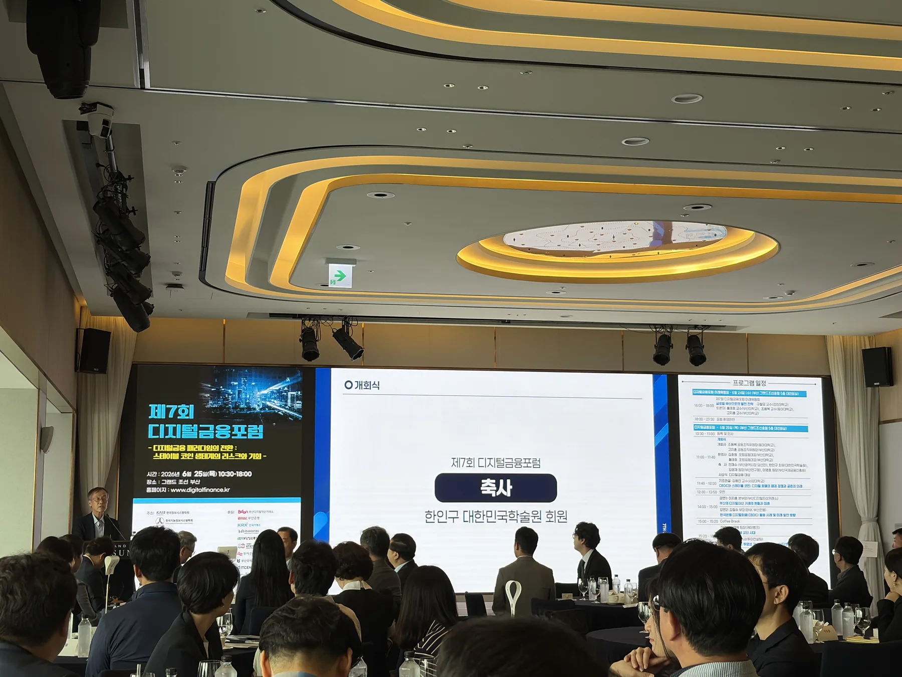
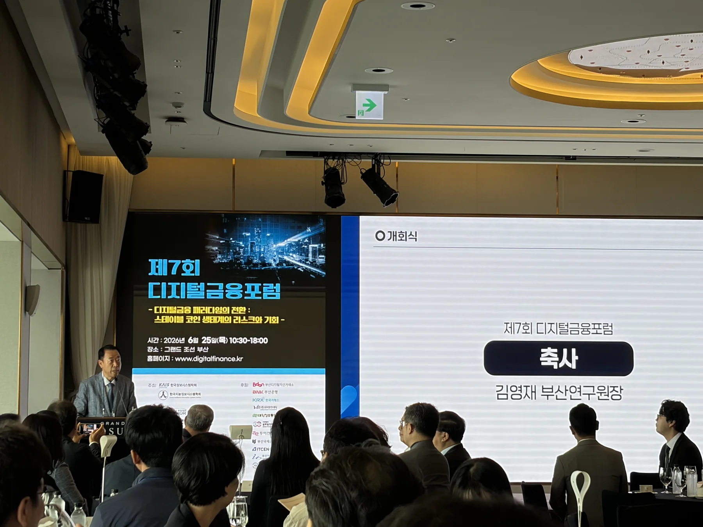
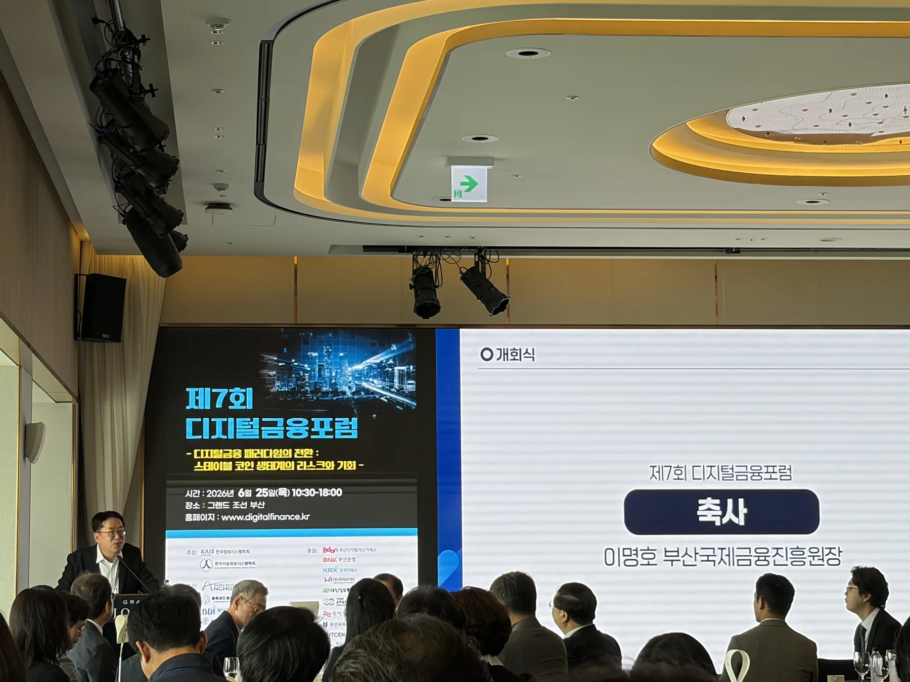
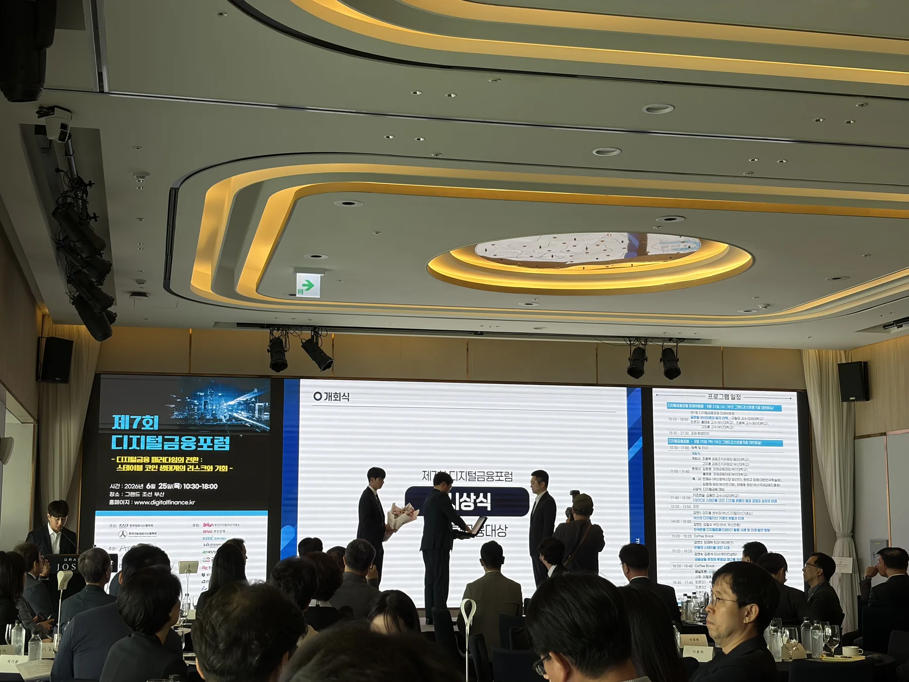
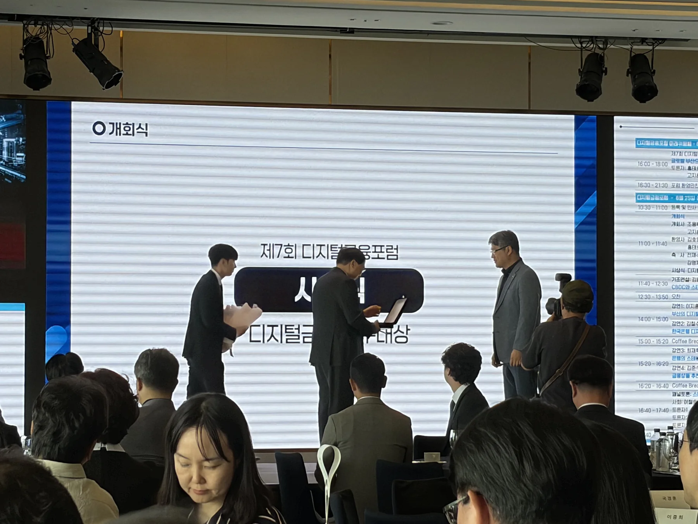
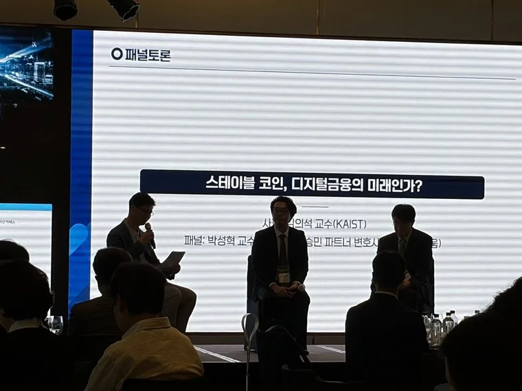
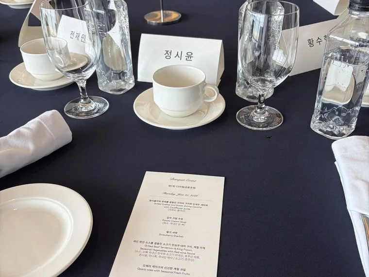

국가가 만드는 CBDC와 민간이 만드는 스테이블코인, 두 디지털 화폐가 '돈의 미래'를 두고 경쟁한다. 미국·중국·EU·일본의 대응을 비교하며 한국의 원화 스테이블코인 설계 방향을 논의한 포럼이었다. 아래 내용은 현장 발표와 토론을 핀로그가 요약한 것으로, 발표자별 전망과 제안은 확정된 제도나 투자 권유가 아니다.
기조연설이 정리한 핵심 구도. 둘은 경쟁하지만 결국 '역할을 나눈 공존(관리된 공존)'으로 간다는 것이 공통된 전망.
| 구분 | CBDC (중앙은행) | 스테이블코인 (민간) |
|---|---|---|
| 발행 주체 | 중앙은행 (국가 신용) | 민간 기업 (은행·핀테크·빅테크) |
| 담보 | 국가 신용 | 준비금(현금·단기 국채) 100%+ |
| 강점 | 안정성·정책 효율(프로그래머블) | 확장성·혁신·글로벌 운용성 |
| 약점 | 프라이버시(데이터 집중), 은행 역할 약화 | 불법 악용·디페그·달러 종속 위험 |
| 적합 영역 | 도매 — 은행 간 정산·증권 결제 | 소매 — 송금·무역·디파이·외국인 송금 |
CBDC는 중앙은행이 모든 데이터를 보유(프라이버시 문제), 완전 암호화는 100% 익명성(정부 거부) — 그 중간을 영지식증명(ZKP)으로 찾는다. "데이터를 보지 않고도 거래의 안전을 증명"하는 기술이 공존의 열쇠.
역사 → 구조 → 국가전략 → 결론을 한 흐름으로 꿰었다. 클릭해 펼쳐 보세요.
현행은 이중 통화제도(중앙은행+상업은행). 민간 화폐의 90% 이상은 상업은행이 만든다.
디지털 화폐의 본질은 ① 무한 분할 ② 프로그래밍 가능 — "언제·어디서·누가·어떻게 쓸지를 정의할 수 있는 돈".
1836년 잭슨 대통령이 중앙은행을 폐지 → 누구나 화폐를 발행하던 자유은행 시대(8,000종 난립) → '와일드캣 뱅킹'·뱅크런 → 1863년 국법은행법으로 복귀.
"누구나 스테이블코인을 발행하자"는 오늘의 주장은 자유은행 시대와 똑같은 구도. '민간 발행의 자유 vs 시스템 안정성'의 재현이다.
현장 발표자는 당시 시가총액·거래량과 달러 기반 코인의 높은 비중을 제시하며 시장의 규모를 설명했다. 이 수치는 발표 시점의 자료이므로 최신 원자료 확인이 필요하다.
핵심 수익 구조는 준비자산 운용수익. 발행사가 받은 자금을 단기 국채 등 준비자산으로 운용해 수익을 얻는 구조가 사업모델의 핵심이라는 취지로 설명했다.
발표에서는 미국의 스테이블코인 규율, 디지털자산 시장구조 논의, CBDC 제한 논의를 서로 구분해 소개했다. 각 법안의 통과·시행 상태는 계속 변할 수 있어 최신 법령을 확인해야 한다.
준비자산이 단기 미 국채 수요를 늘리고 달러 기반 결제망을 확장할 수 있다는 것이 발표자의 주요 해석이었다.
발표자는 CBDC를 도매 정산, 스테이블코인을 민간 소매·송금 영역에 활용하는 역할 분담 가능성을 제시했다. 비용과 처리시간 개선 수치는 적용 국가·사업자·규율에 따라 달라진다.
원화 기반 디지털자산 생태계를 조기에 검토해야 한다는 의견과 함께 K-콘텐츠·관광자산의 토큰화 가능성을 제안했다. 특정 기업의 발행 가능성은 전망에 불과하며 확정 사실이 아니다.
지니어스법으로 민간 스테이블코인 양성. 준비금=미 국채 → 달러 패권의 디지털 연장.
민간 코인 금지, 디지털 위안(지갑 18억). 일대일로 결제·데이터 주권.
세계 최초 포괄규제 MiCA. ECB 디지털 유로. 미·중 사이 권역 보호.
엔화 스테이블코인(JPYC), 암호화폐 세금 55%→20%, 전담 사무처.
한국은행 예금토큰 실증(2025.4~6). 이중구조. 발행주체 논쟁으로 입법 교착.
mBridge와 프로젝트 아고라는 서로 다른 국경 간 디지털 결제 실험이다. 한국은 프로젝트 아고라에 참여하고 있으며, 핵심 과제는 상호운용성과 KYC·AML 기준 정합성이다.
발표자는 블록체인의 처리성능과 알고리즘형 스테이블코인의 구조적 취약성을 지적했다. SVB 사태 당시 USDC가 일시적으로 1달러 아래로 하락한 사례를 들어 기술만으로 제거하기 어려운 준비자산 위험을 설명했다.
발행주체·이자 지급·해외코인 규율이 핵심 쟁점으로 제시됐다. 발표자는 발행자 제한뿐 아니라 준비자산·상환·공시 등 운영 규칙을 정교하게 설계해야 한다는 취지로 설명했다.
발표자는 국내 결제비용 구조와 네트워크 효과를 근거로 스테이블코인이 실제 비용을 줄이는 문제 해결 수단이어야 한다고 강조했다. 구체적인 비용 수치는 적용 범위와 산정 방식 확인이 필요하다.
포럼 토론을 종합하면, 도입 속도뿐 아니라 준비자산·상환·공시·감독의 운영 규칙을 견고히 하고 실제 수요가 있는 활용처부터 검증해야 한다.
은행 중심론 (한국은행·일부): 통화안정과 준비자산 신뢰를 이유로 은행 중심 컨소시엄 방안이 논의됐다. 구체적 지분요건은 확정 제도가 아니다.
개방론 (핀테크·법조): 미국도 은행만 하지 않는다. 발행자보다 '운영 규칙'을 규제. 글로벌 신뢰엔 차라리 삼성·업비트.
① 해외송금·외국인 노동자 송금(환마진↓)
② 국경 간 B2B 무역결제
③ 자산 토큰화(RWA)·STO
④ 디파이 담보·이자
— 국내 결제용은 후순위(인프라가 이미 우수)
개회식 · 축사 · 시상식 · 패널토론 · 만찬 — 그랜드 조선 부산 (2026.6.25)








